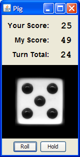

Pig is a folk jeopardy dice game described by John Scarne in 1945, and was an ancestor of the modern game Pass the Pigs® (originally called PigMania®).
The rules are simple: Two players race to reach 100 points. Each turn, a player repeatedly rolls a die until either a 1 is rolled or the player holds and scores the sum of the rolls (i.e. the turn total). At any time during a player's turn, the player is faced with two decisions:
To familiarize yourself with play, you can play an optimal Pig opponent online. The key decision facing a player is how large a turn total should be risked to possibly get an even larger total. To learn more about the game of Pig, visit The Game of Pig web page.
| Summary | The Game of Pig - Milestone-based approach to implementation of the dice game Pig with side opportunities for simple, interesting analysis driven by curiosity to better understand game play. Also includes object-oriented and GUI programming exercises. |
| Topics | Bottom-up, milestone-based development, dynamic programming and Monte Carlo analysis techniques. |
| Audience | Assignment suite below is appropriate for CS1. Upper-level Pig-related assignments for networking, artificial intelligence, etc. are described in Pedagogical Possibilities for the Dice Game Pig. Journal of Computing Sciences in Colleges, vol. 21, no. 6, pp. 149-161, June 2006. |
| Difficulty | These assignments range from beginner to intermediate difficulty. CS1 students complete all but the object-oriented and GUI programming assignments in less than 3 weeks. |
| Strengths | Pig offers one of the best fun-to-SLOC (source lines of code) ratios of any game. One would be hard pressed to find another game with such simple rules that engages and leaves one on the knife-edge of indecision. As such, it is a teaching treasure. Mathematics instructors have long used this game to teach probabilistic concepts. We here offer a rich collection of CS1 Pig exercises that illustrate bottom-up development. Alternatively, one can approach the final "Pig Game" exercise as a good top-down, stepwise refinement exercise. Opportunities for Monte Carlo simulation abound. |
| Weaknesses | Except for GUI assignment, text-based and non-graphical. |
| Dependencies | Most assignments require only understanding of random number generation, text I/O, and simple control structures. GUI assignment requires additional understanding of basic GUI concepts and components including labels, buttons, panel image display, and popup window dialogs. O-O assignment requires understand of basic O-O concepts, including interfaces. |
| Variants | One can easily create variants by choosing different play policies and/or rule variations. Both are described in detail below. |
Each exercise below may be used stand-alone or in a logical sequence of milestones.
| Problem Description | Previous Milestone |
| Hold-at-20 Turn - simulate a single turn of Pig where a player holds at 20 points | |
| Hold-at-20 Outcomes (Estimation) - statistics on Monte Carlo simulations of hold-at-20 turn outcomes | Hold-at-20 Turn |
| Hold-at-20 Outcomes (Computation) - dynamic programming computation of hold-at-20 turn outcomes | Hold-at-20 Turn |
| Hold-at-20-or-Goal Turn - simulate a single turn of Pig where a player holds at 20 points or the goal score | Hold-at-20 Turn |
| Hold-at-20-or-Goal Game - simulate a single game of Pig where a player holds at 20 points or the goal score | Hold-at-20-or-Goal Turn |
| Average Pig Turns - average turns of Monte Carlo simulations of hold-at-20-or-goal games | Hold-at-20-or-Goal Game |
| Two-Player Pig - simulate a single two-player game of Pig with hold-at-20-or-goal players | Hold-at-20-or-Goal Game |
| First-Player Advantage - Monte Carlo simulations estimate the first-player advantage in hold-at-20-or-goal Pig | Two-Player Pig |
| Pig Game - the user plays Pig versus a hold-at-20-or-goal player | Two-Player Pig |
| O-O Pig Game - the user plays Pig versus a hold-at-20-or-goal player. Implementation is object-oriented. | |
| Pig Game GUI - the user plays Pig versus a keep-pace-and-end-race player via a GUI |
Different subsets of these exercises may be chosen according to different
desired goals/emphases. For example:
Pig Game Milestone track: Hold-at-20 Turn,
Hold-at-20-or-Goal Turn,
Hold-at-20-or-Goal Game, Two-Player Pig,
Pig Game
Monte Carlo track: Hold-at-20 Turn,
Hold-at-20 Outcomes (Estimation),
Hold-at-20-or-Goal Turn, Hold-at-20-or-Goal Game,
Average Pig Turns, Two-Player Pig,
First-Player Advantage
Cut-to-the-Chase GUI track:
Pig Game GUI
Minimalist O-O track: O-O Pig Game
Creating variations of the these exercises is simple. One can both vary the simulated play policy, and/or rule variations.
Pig Play Policies: Let i be the player's score, j be the opponent's score, and k be the current turn total.
Game Variations:
With the many ways the problem set above may be thus varied, it is not difficult to craft a unique (i.e. not easily plagiarized) assignment experience for your students.
With its simple rules and engaging play, Pig lends itself to many uses across the Computer Science curriculum: